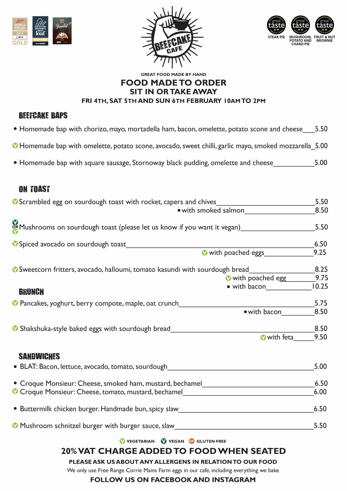
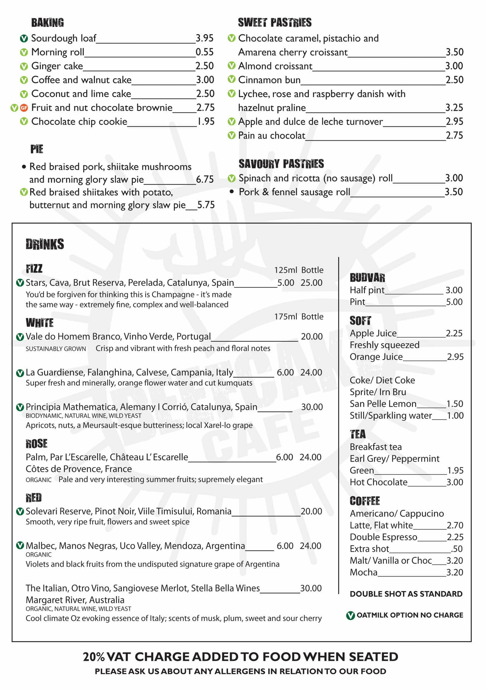

Menu
News
About
Beefcake is a multi-award-winning, family run, bakery and licensed café at Anniesland Cross, Glasgow. We specialise in making tasty sourdough bread and all our food is made from scratch.
Current menu
Friday to Sunday from 10am till 2pm

